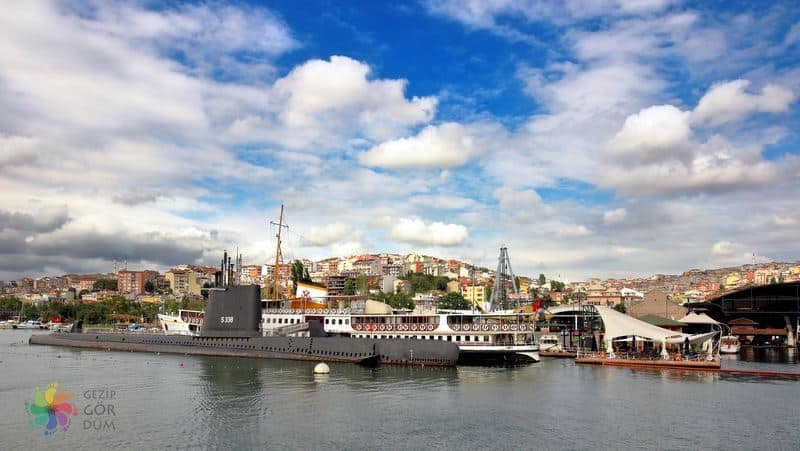
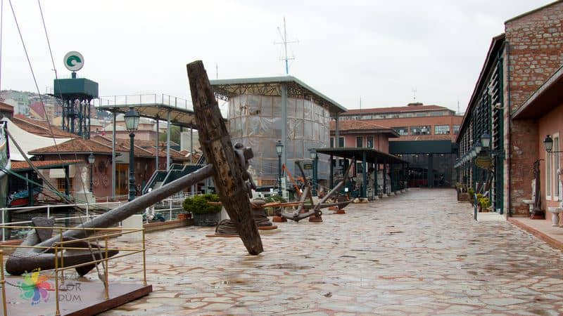
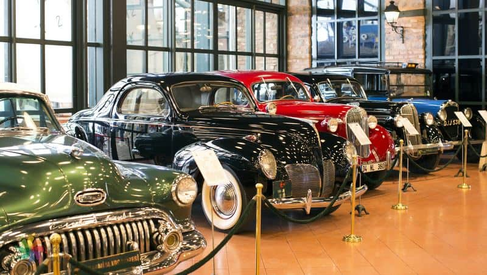
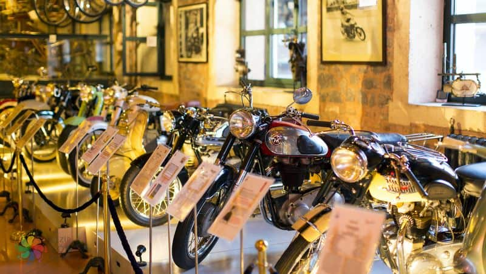
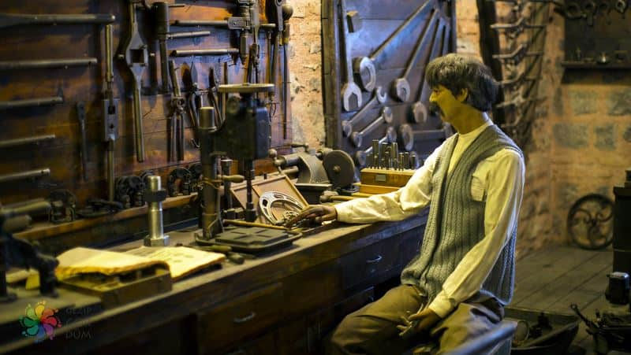
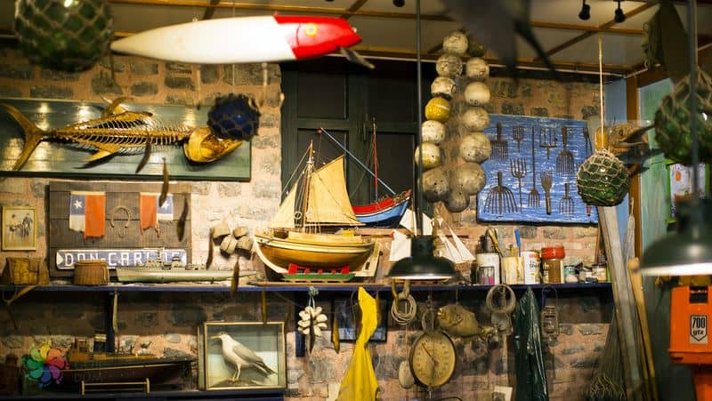
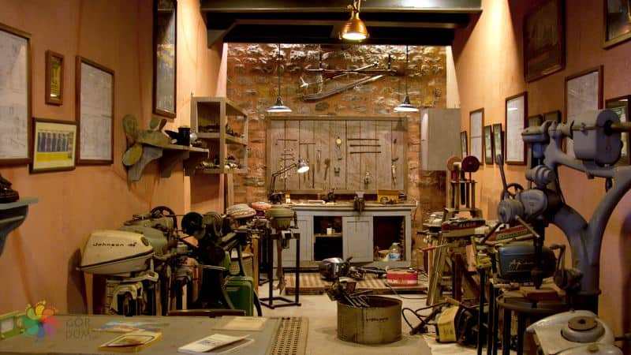

Rahmi Koç Müzesi
Açıklama1994 yılında Rahmi M. Koç Müzecilik ve Kültür Vakfı bünyesinde açılmış olan kültürel tesis, Hasköy Semti’nde yaklaşık 27.000 metrekarelik alan üzerinde faaliyet gösteriyor.Geçmişten günümüze tüm ülkelerde geliştirilmiş endüstriyel ve mühendislikle ilgili objelerin toplanması, korunması ve araştırılması kâr amacı gütmeyen kurumun temel misyonu olarak benimsenmiş. Bu görev doğrultusunda hatırı sayılır ölçüde geniş bir koleksiyonu toplamayı başaran müze ayrıca halk arasında kültürel tesislere yönelik ziyaret kültürünü yaygınlaştırmayı ve endüstri tarihinin araştırılmasını amaçlıyor.  Ziyaretçilerinin konforlu bir ziyaret deneyimi yaşayabilmeleri için müzenin tüm kapalı ve açık alanlarına rampalar ve asansörler yerleştirilmiş. Ayrıca çocuklu ailelerin ihtiyaç duyabilecekleri düşünülerek müzede bebek alt değiştirme ünitesi ve çocuklar için tuvalet adaptörleri ile basamaklar bulunduruluyor.  Sanayi ve endüstrinin yanı sıra ulaşım, iletişim gibi teknik alanların tarihine de odaklanmış olan müzede yıl içerisinde pek çok geçici sergi, konser, eğitim ve özel organizasyon düzenleniyor.  Müze, Osmanlı döneminde gemilerin çapalarının yapıldığı Lengerhane, 1861 yılında Şirket-i Hayriye tarafından bakım-onarım işleri için kurulmuş Hasköy Tersanesi ve ana girişten Haliç’e kadar uzanan açık hava sergileme alanı olmak üzere 3 ana kısımdan oluşuyor. Atatürk Bölümü başta olmak üzere müzenin denizcilik, havacılık, kara ulaşımı, iletişim, baskı atölyesi, bilimsel aletler, modeller ve oyuncaklar ile ilgili tüm sergileri bu alanlarda ziyaretçilere sunuluyor.  Müzenin ilk açıldığı bina olan Lengerhane, günümüzde geçici sergilerin ziyaretçilere sunulduğu alan olarak kullanılıyor. Vakıf tarafından Dr. Bülent Bulgurlu’nun başkanlığını yaptığı deneyimli bir ekibe restore ettirilen tarihi yapı, kendine has dokusu ile ziyaretçilerin beğenisini kazanıyor. Binaya, 2016 yılında aile üyelerinin de katıldığı bir törenle Mustafa V. Koç’un ismi verilmiş.  Kapsamlı bir restorasyon çalışmasının ardından 2001 yılında müze bünyesine kazandırılan Tarihi Hasköy Tersanesi, 11.000 metrekareyi kaplayan 14 binadan oluşuyor. Uzun yıllar şehir hatları bünyesinde çalıştırılan Kocataş ve Sarıyer vapurlarının inşa edildiği tersanenin yapıları alan ve yükseklik bakımından daha fazla yere ihtiyaç duyulan koleksiyonların sergilenmesi için kullanılıyor.  Müzenin son ana bölümü ise tarihi öneme sahip araçların yerleştirildiği açık hava sergileme alanı. Bu bölümü gezerken pek çok klasik otomobil modelini, boyutları ile dikkat çeken Turgut Alp Vinçi’ni, B-24 Liberator uçaklarını ve çok daha fazlasını yakından inceleme olanağına sahip olabilirsiniz. Hatta açık hava sergi alanından Haliç kıyısına doğru ilerlerseniz Fenerbahçe Vapuru’nu ve TCG Uluçalireis Denizaltısı’nı ziyaret edebilirsiniz.  Dönem dönem rehberli turların da düzenlendiği müzede dilerseniz tren veya nostaljik deniz araçlarıyla düzenlenen gezilere katılabilirsiniz. Haliç turlarında hafta sonları Rosalie ve Liman 2 buharlı römorkörleri, hafta içi Kont Ostrorog balıkçı teknesi kullanılıyor. Kısa tren seferleri ise Haliç kıyısına döşenmiş hat boyunca yapılıyor. Müze dâhilindeki tüm turlara katılmak için gişelerden rezervasyon yaptırabilirsiniz. Kültür kadar sosyal hayata da önem veren müzenin bölümleri rezervasyon yaptırılması durumunda özel ve ticari fotoğraf çekimleri için kullanılabiliyor. Eğer tarihi araçlarla dolu bir alanda özel fotoğraf çekimi yaptırmak veya çocuğunuzun doğum günü partisini Fenerbahçe Vapuru’nda vermeyi düşünürseniz, tek yapmanız gereken rmk-museum.org.tr adresindeki “Mekân Kullanımları“ bölümünde belirtilen telefon numarasını aramak.
|
|
Yaz Dönemi 1 Nisan - 31 Ekim Açılış Saati: 10:00 Kapanış Saati: 19:00 |
Kış Dönemi 31 Ekim - 1 Nisan Açılış Saati: 10:00 Kapanış Saati: 17:00 |
|
Gişe Yaz / Kış Kapanış Saatleri Yaz Dönemi: 19:00 Kış Dönemi: 17:00 |
Adres: Piri Paşa, Hasköy Cd. No:5 D:No:5, 34445 Beyoğlu/İstanbul |
|
Kapalı Günler Pazartesi ve Özel Günlerde Kapalı |
Giriş Ücreti : Ögrenci= 7 TL Yetişkin=16 TL |